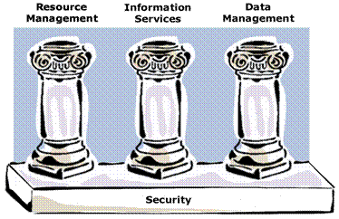

This document presents a general discussion of the features, functions, and operation of the Globus Toolkit® Version 3.0 (GT3) Index Service and related services. The specific configuration and usage of the Index Service is described in the GT3 Index Service User’s Guide.
This overview is intended for systems administrators or developers who are new to Version 3.0 of the Globus Toolkit and the Index Service. For developers who want to write back ends, some Grid background and scripting abilities are assumed, as is a working knowledge of Unix.
This document assumes that the Globus Toolkit 3.0 has been installed and configured for your particular computing environment.
This document contains the following sections:
The Globus Toolkit 3.0 Documentation page contains links to additional GT3 user and developer documentation, as well as to technical reference documents.
The GT3 Admin Guide presents installation and configuration information.
Also see:
Let’s begin by putting the Index
Service in the perspective of computational Grids, the Globus Project™,
and the Globus Toolkit.
Computational Grids are environments that enable software applications to integrate instruments, displays, computational resources, and information resources that are managed by diverse organizations and widespread locations. Grid applications often involve large amounts of data and/or computing and are not easily handled by today’s Internet and web infrastructures.
Grid technologies enable large-scale sharing of resources within groups of individuals and/or institutions. In these settings, the discovery, characterization, and monitoring of resources, services, and computations are challenging problems due to the considerable diversity, large numbers, dynamic behavior, and geographical distribution of the entities in which a user might be interested. Consequently, information services are a vital part of any Grid software or infrastructure, providing fundamental mechanisms for discovery and monitoring, and hence for planning and adapting application behavior.
The Globus Project is developing the fundamental technologies needed to build these computational Grids. Globus research focuses not only on the issues associated with building computational Grid infrastructures, but also on the problems that arise in designing and developing Grid-based applications.
The Globus Project provides software tools that make it easier to build computational Grids and Grid-based applications. These tools are collectively called the Globus Toolkit. The Toolkit is used by many organizations to build computational Grids that can support their applications.
The composition of the Globus Toolkit can be pictured as the following three pillars. Security is the foundation common to all three pillars.

The first pillar of the Globus Toolkit provides Resource Management, which involves the allocation of Grid resources. It includes such packages as the Globus Resource Allocation Manager (GRAM) and Globus Access to Secondary Storage (GASS).
The second pillar of the Globus Toolkit is for Information Services, which provide information about Grid resources and are the focus of this document. Such services include the GT3 Index Service.
The third pillar of the Globus Toolkit is for Data Management, which involves the ability to access and manage data in a Grid environment. This involves such utilities as GridFTP and the Reliable File Transfer (RFT) service, which are used to move files between Grid-enabled devices.
In the context of the Globus Toolkit, Information Services have the following requirements:
As part of this information infrastructure, the Index Service uses an extensible framework for managing static and dynamic data for Grids built using the Globus Toolkit 3.0. The functionality provided includes the following:
The Globus Toolkit 3.0 is based on Open Grid Service Architecture (OGSA) mechanisms. OGSA integrates Grid computing and Web services technologies by using the Web Services Description Language (WSDL) to achieve self-describing, discoverable services and interoperable protocols, with extensions to support multiple coordinated interfaces and change management. Within OGSA, everything is represented as a Grid service: a Web service that provides a set of well-defined interfaces and that follows specific conventions. The interfaces address discovery, dynamic service creation, lifetime management, notification, and manageability; the conventions address naming and upgradeability.
These Grid services are not only a static set of persistent services; they can also be transient service instances such as a query against a database, a data mining operation, a network bandwidth allocation, a running data transfer, and an advance reservation for processing capability. There may be one or more instances of a particular Grid service.
Each Grid service instance has a set of service data associated with it, and this data is represented in a standardized way. There is also a standard operation for retrieving this service data from individual Grid service instances, as well as standard interfaces for registering information about Grid service instances.
Discovery often requires instance-specific, perhaps dynamic information. Service data offers a general solution in that every service must support some common service data, and may support any additional service data desired.
The Index Service does not beget specific data types. The types of data available from the Index Service for queries instead depend on how the Service is configured; that is, what sorts of Service Data Provider programs it uses to aggregate data.
The Index Service provides the following key capabilities:
The Index Service provides a standard mechanism for dynamic generation of service data via external programs. These external provider programs can be the core providers that are part of GT3 or user-created, custom providers.
A generic framework for aggregation of service data
Service data coming in from various Service Data Provider programs can be aggregated in different ways and indexed to provide efficient query processing. The Index Service also provides a standard mechanism for registration, polling, and notification/subscription of service data.
A Registry of Grid services
A set of available Grid services is maintained in a Registry. A Registry allows for soft-state registration of Grid services, in that a set of services can be registered and periodically updated as required. A Registry then can be used to support query or other operations on a given service.
As mentioned above, each Grid service instance has a particular set of service data associated with it. The essence of the Index Service is to provide an interface for operations accessing, aggregating, generating, and querying this data.
This section presents a brief overview of OGSA and Globus Toolkit 3.0 concepts and terminology as related to the Index Service. More information on OGSA and GT3 can be found in the publications listed in the Related Documents section.
The OGSA model comprises persistent services (typically a few) and transient services (potentially many). All services adhere to specified Grid service interfaces and behaviors. The interfaces correspond to WSDL portTypes and are used for managing the Grid service instances. The GridService portType is used to query and update the service data of a Grid Service instance and control the lifetime of the instance.
The interfaces and functions most relevant to the Index Service can be summarized as follows:
Factory
Used to create a new Grid service instance via its CreateService operation. A Factory returns a Grid Service Handle (GSH) as described below, and maintains a set of Service Data Elements that can be queried.
Grid Service Handle (GSH)
Returned by the Factory create operation. A GSH is a URL used to globally name a Grid service instance for all time. A GSH must be converted to a Grid Service Reference (see below) in order to use the service.
Grid Service Reference (GSR)
Describes how a client can communicate with a Grid service instance. The HandleMap interface allows a client to map from a GSH to a GSR. While the GSH represents name only, the GSR includes binding information for transport protocol and data encoding format.
Query
Provides extensible query language support. A Grid service instance maintains a set of Service Data Elements. The FindServiceData operation from the GridService interface is used to query this information. This is a standard, extensible query operation against a service’s Service Data Elements, which may use either the simple default “by name” query or a more complex language like XPath or XQuery. The
ogsi-find-service-datacommand (see Querying Service Data) is the client to the query interface.
Registry
Supports discovery by returning the GSHs of a set of Grid services. A Registry allows for soft-state registration of Grid services, in that a set of Grid services can periodically register their GSHs into a Registry service to allow for discovery of services in that set.
Notification
The NotificationSource interface is used for client subscription, to register interest in a service. It sends notification messages about registered topics. These topics can be linked to arbitrary values (state values) generated by a service at runtime or linked to a service data element. The NotificationSink interface is used for asynchronous delivery of notification messages; it can be applied to dynamic discovery/registration services, monitoring, application error notification, etc.
To summarize, a Grid service instance
is created by the Factory interface, which returns a GSH to identify the
service. The GSH is converted to a GSR (which includes binding
information) so that the service can be used. Service instances can be
identified in a Registry, which can be used to support query or other
operations on a given service. The Notification interface provides for
subscription to and delivery of notification messages regarding
service-related events.
Data discovery often requires instance-specific, sometimes dynamic information. So far in this document, we’ve seen that each Grid service instance has a particular set of service data associated with it. This service data offers a general solution to the issues of discovery, in that every service must support some common service data, and may support any additional service data desired, such as metadata and instance state data.
A primary
function of the Index Service is to provide an interface for querying
aggregate views of service data collected from other services. The
FindServiceData operation from the GridService interface is used to
query this information. This is a standard, extensible query operation
against a service’s Service Data Elements, which may use either the
simple default “by name” query or a more complex language like XPath or
XQuery. The
ogsi-find-service-data
command (see
Querying Service Data) is the client to the query interface.
The NotificationSource interface is used for client subscription, to register interest in a service. It sends notification messages about registered topics. These topics can be linked to arbitrary values (state values) generated by a service at runtime or linked to a Service Data Element. The NotificationSink interface is used for asynchronous delivery of notification messages; it can be applied to dynamic discovery/registration services, monitoring, application error notification, etc.
Both subscription and FindServiceData are forms of query against the service data of an instance. FindServiceData is a simple synchronous query (pull), while a subscription notification is a persistent query, with asynchronous response (push).
The Registry interface supports discovery by returning the GSHs of a set of Grid services. The Registry allows for soft-state registration of Grid services, in that a set of Grid services can periodically register their GSHs into a Registry service, to allow for discovery of services in that set.
In GT3, there are presently two ways in
which you can access the service data aggregated by the Index Service:
the GT3 Service Data Browser and the
ogsi-find-service-data
command.
The Service Data Browser is the GUI to service data within GT3. The Browser allows you to view the details of the Grid services available to you from a Registry configured by your administrator. These services include, but are not limited to, the Index Service. Service data can be viewed in various formats, depending on your requirements. Refer to GT3 Service Data Browser Quick Start for details on and examples of using the Browser.
The ogsi-find-service-data command provides a command-line interface for querying the service data available to you from the Index Service or any Grid service.
The ogsi-find-service-data command allows you to perform the following types of queries:
You can specify the ogsi-find-service-data command output as raw XML or as an easy-to-read outline format.
Refer to Querying Service Data for details on and examples of using the ogsi-find-service-data command.
The security mechanism used by the Globus Toolkit is the Grid Security Infrastructure (GSI), which enables the use of certificates and various files to provide authentication and authorization services. GSI is described in more detail in GSI Security Infrastructure.
GSI is a library for providing generic security services for applications that will be run on the Grid. GSI provides programs to facilitate login to a variety of sites, while each site has its own flavor of security measures.
GSI provides a single sign-on authentication service, to identify a user for access to multiple Grid resources via one sign-on procedure. GSI also provides local control over access rights and mapping from global to local user identities.
OGSA provides two different GSI implementations. One is based on message-level security, and the other on transport-level security, as known from Version 2 of the Globus Toolkit (GT2). Transport-level security is supported in order to be backwards compatible with GT2, and also to simplify integration with hosting environments without message-level security support. GSI defines protocols for mutual authentication, credential delegation, proxy signing, message protection, and authorization, and typically sits on top of a Secure Sockets Layer/Transport Layer Security (SSL/TLS) implementation.
For more information on GT3/OGSA security, refer to GT3 Grid Security Infrastructure.